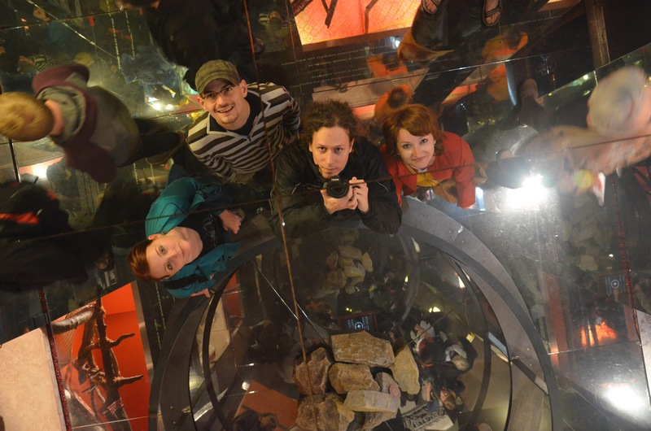
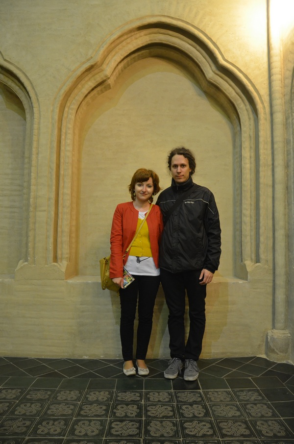
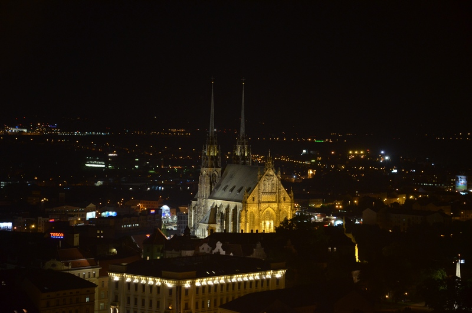
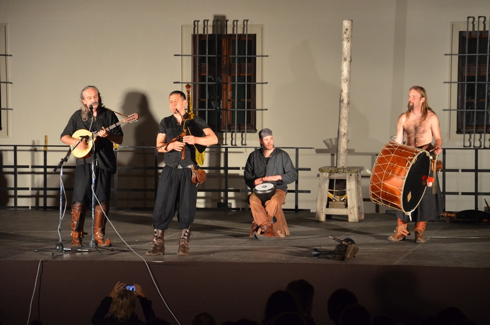

Trochu opožděně přináším článek o tom, co přinesl květen na poli kulturním i jiném…
- Museli jsme oželet komorní atmosféru Artu a vydali se nakonec na Šmejdy do Palace Cinema. Dokument byl opravdu zajímavý, i když mnoho z něj už bylo v médiích prozrazeno. Přesto mě překvapil některými momenty a dojal svým závěrem. Doporučuju!
- Když letošní jaro ještě bylo jarem, vyrazili jsme s guru Péťou a několika dalšími jogíny na první jógu v přírodě. Cvičili jsme v trávě na paloučku na Červeném kopci a bylo to prostě báječné :-)!
- Navštívila jsem startupovou soutěž Star Cube Show. Letošní projekty mě úplně neokouzlily, zato si mě získal štědrý raut plný výborných jednohubek a chlebíčků… nojo, jsem barbar :D!
- Ani letos jsme si nemohli nechat ujít brněnskou muzejní noc. Tentokrát jsme se vydali do Muzea romské kultury. Expozice je skutečně velice zajímavá a určitě stojí za vidění. Nezapomenutelným se stal i zdejší interaktivní koutek, ve kterém jsme se mohli “nahastrošit” do různých stylových modelů a udělat si foto :-).

V Muzeu romské kultury
Jako druhou a zároveň poslední štaci večera, jsme zvolili Špilberk. Podařilo se nám chytnout na České speciální bus, takže jsme se do kopce nemuseli trmácet pěšky. Na nádvoří samozřejmě fronta jak na banány. Rozhodli jsme se ale, že počkáme. Na Špilberku je toho k vidění strašně moc, takže jsme to jen tak v rychlosti prolítli. Příští rok bych se na Špilas určitě ráda vrátila a prošla si to důkladněji. Stihli jsme ale vyšplhat na věž a pokochat se výhledem na noční osvícené Brno a poslechnout si vystoupení kapely dudáků na nádvoří. Letošní program hodnotím velmi kladně :-)!

Na Špilase

Noční Petrov

Hudební zakončení večera
- Když jsme šli v pátek vyzvednout do Kasa.cz kafe, čirou náhodou jsme narazili na koncert Davida Kollera. (Nejspíš u příležitosti otevření nějakého z těch nových výškáčů na Heršpické. Museli mu asi hodně zaplatit, aby hrál pro tak malý publikum :D…) Samozřejmě jsme se přišli podívat blíž, abychom zjistili, jestli je to vážně Koller nebo nějaký revival. Ale byl to pravý Koller, a protože uzavřený areál byl ohraničený jenom nízkými zábranami, viděla jsem legendu naší rockové scény poprvé na vlastní oči. A slyšela naživo Šrouby do hlavy ;-)!
A dále…?
- Konečně nám přišly skříňky a stolek do obýváku a máme si kam odkládat hrnek s kafem :D!
- Pustila jsem se do plánování letošní dovolené a čtení cestopisů :-)
- Odhalila jsem pozitiva i slabé stránky své nové práce a už mi zbývá jen poslední měsíc na rozmyšlenou, jestli zůstat nebo hledat štěstí jinde.
Jak jste se měli v květnu vy?